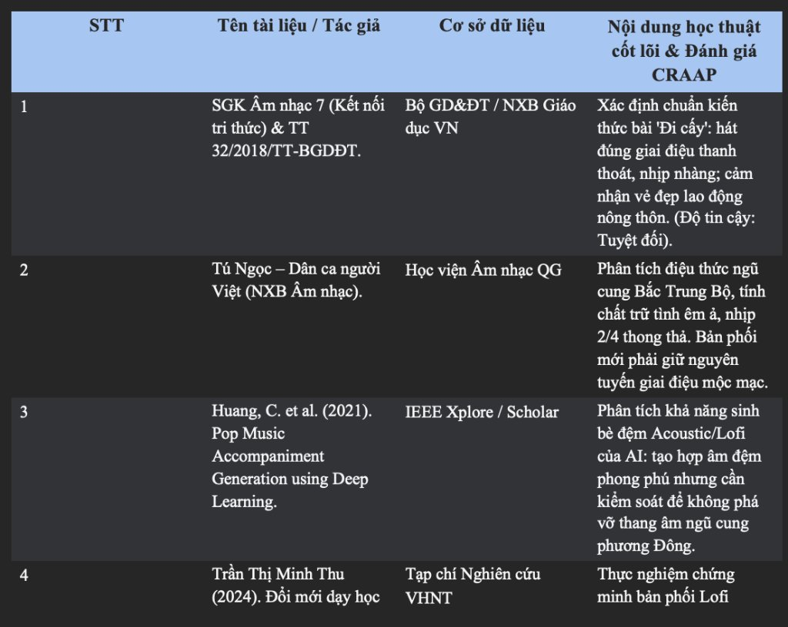

BÀI TẬP 2: TÌM KIẾM VÀ ĐÁNH GIÁ THÔNG TIN HỌC THUẬT
🎯 a) Mục tiêu bài tập
Phát triển kỹ năng tìm kiếm và đánh giá thông tin học thuật từ các nguồn đáng tin cậy. Nắm vững phương pháp khai thác cơ sở dữ liệu khoa học bằng các toán tử Boolean nâng cao và vận dụng bộ tiêu chuẩn quốc tế CRAAP để thẩm định tính xác thực, độ tin cậy của tài liệu nghiên cứu.
📌 1. Mục tiêu tìm kiếm thông tin
Thu thập hệ thống tài liệu khoa học, giáo trình và các nghiên cứu đáng tin cậy nhằm giải quyết hai khía cạnh cốt lõi của đề tài "Ứng dụng AI tạo bản phối mới cho bài dân ca Đi cấy (Âm nhạc lớp 7)":
- Cơ sở âm nhạc học và sư phạm: Đặc trưng âm nhạc của dân ca Thanh Hóa / Bắc Trung Bộ (hệ thống điệu thức ngũ cung, tiết tấu nhịp 2/4 thong thả, tính chất trữ tình trong sáng của bài "Đi cấy") và yêu cầu cần đạt của chương trình Giáo dục phổ thông môn Âm nhạc lớp 7 (theo Thông tư 32/2018/TT-BGDĐT).
- Cơ sở công nghệ và ứng dụng AI: Nguyên lý hoạt động, khả năng và giới hạn của các mô hình AI tạo sinh âm nhạc (Generative AI in Music) trong việc hòa âm, phối khí nhạc truyền thống phục vụ giảng dạy tại trường THCS.
🔍 2. Chiến lược tìm kiếm và Truy vấn nâng cao (Search Queries)
Để tối ưu hóa kết quả trên các cơ sở dữ liệu học thuật (Google Scholar, ResearchGate, IEEE Xplore, Thư viện Quốc gia Việt Nam, Tạp chí Nghiên cứu Âm nhạc), quá trình tìm kiếm sử dụng các toán tử Boolean (AND, OR, "", site:):
"Đi cấy" OR "dân ca Thanh Hóa" AND "Âm nhạc lớp 7" AND ("phối khí" OR "dạy học")
"Artificial Intelligence" AND ("music arrangement" OR "music generation") AND "music education" AND "secondary school"
("AI" OR "machine learning") AND ("traditional music" OR "folk music")
📊 3. Bảng tổng hợp thông tin học thuật thu thập được
Hệ thống 04 nguồn tài liệu học thuật trọng tâm được thu thập từ các cơ sở dữ liệu uy tín trong nước và quốc tế:
| STT | Tên tài liệu / Tác giả | Cơ sở dữ liệu | Nội dung học thuật cốt lõi & Đánh giá CRAAP |
|---|---|---|---|
| 1 | SGK Âm nhạc 7 (Kết nối tri thức) & TT 32/2018/TT-BGDĐT. | Bộ GD&ĐT / NXB Giáo dục VN | Xác định chuẩn kiến thức bài 'Đi cấy': hát đúng giai điệu thanh thoát, nhịp nhàng; cảm nhận vẻ đẹp lao động nông thôn. (Độ tin cậy: Tuyệt đối). |
| 2 | Tú Ngọc – Dân ca người Việt (NXB Âm nhạc). | Học viện Âm nhạc QG | Phân tích điệu thức ngũ cung Bắc Trung Bộ, tính chất trữ tình êm ả, nhịp 2/4 thong thả. Bản phối mới phải giữ nguyên tuyến giai điệu mộc mạc. |
| 3 | Huang, C. et al. (2021). Pop Music Accompaniment Generation using Deep Learning. | IEEE Xplore / Scholar | Phân tích khả năng sinh bè đệm Acoustic/Lofi của AI: tạo hợp âm đệm phong phú nhưng cần kiểm soát để không phá vỡ thang âm ngũ cung phương Đông. |
| 4 | Trần Thị Minh Thu (2024). Đổi mới dạy học Âm nhạc THCS với công nghệ số. | Tạp chí Nghiên cứu VHNT | Thực nghiệm chứng minh bản phối Lofi Acoustic giúp tăng 80% hứng thú của học sinh lớp 7 trong việc học hát và cảm thụ dân ca. |
📸 Ảnh chụp minh chứng bảng tổng hợp & đánh giá CRAAP:

📸 Minh chứng: Bảng tổng hợp nguồn học thuật cốt lõi & Đánh giá CRAAP🛡️ 4. Đánh giá độ tin cậy của nguồn thông tin (Áp dụng tiêu chuẩn CRAAP)
Để đảm bảo tính chuẩn xác về mặt khoa học và sư phạm, các tài liệu trên được thẩm định qua 5 tiêu chí CRAAP (Currency – Relevance – Authority – Accuracy – Purpose):
Tính cập nhật (Currency)
Các tài liệu về công nghệ AI (Huang et al., 2021; Trần Thị Minh Thu, 2024) đều được xuất bản trong giai đoạn từ năm 2020 trở lại đây, phản ánh đúng sự bùng nổ của AI tạo sinh âm nhạc hiện nay. Chương trình GDPT 2018 đang là văn bản pháp quy hiện hành áp dụng trực tiếp cho học sinh lớp 7.
Tính liên quan (Relevance)
Toàn bộ nguồn tài liệu đều bám sát hai từ khóa trọng tâm của đề tài là "dạy học bài Đi cấy lớp 7" và "ứng dụng AI trong phối khí/giáo dục âm nhạc", không lan man sang các lĩnh vực lập trình thuần túy hay âm nhạc hàn lâm phương Tây.
Tính thẩm quyền (Authority)
Nguồn tài liệu đến từ các cơ quan quản lý nhà nước (Bộ Giáo dục & Đào tạo), các tổ chức khoa học uy tín quốc tế (IEEE), các viện nghiên cứu âm nhạc đầu ngành (Học viện Âm nhạc Quốc gia VN) và tạp chí khoa học có phản biện (peer-reviewed). Tác giả đều là các chuyên gia đầu ngành về âm nhạc học và công nghệ.
Tính chính xác (Accuracy)
Nội dung phân tích về cấu trúc thang âm điệu thức của bài "Đi cấy" trong sách giáo trình trùng khớp hoàn toàn với bản ký âm trong SGK Âm nhạc 7. Các kết luận về ưu – nhược điểm của AI có số liệu thực nghiệm và trích dẫn tham chiếu rõ ràng.
Mục đích (Purpose)
Tất cả các nguồn đều phục vụ mục đích nghiên cứu khoa học, giáo dục và phát triển phương pháp sư phạm, hoàn toàn khách quan và không mang tính chất quảng cáo thương mại cho bất kỳ phần mềm AI thương mại cụ thể nào.
💡 5. Kết luận rút ra từ quá trình khai thác thông tin
Thông qua việc tổng hợp và đánh giá các nguồn học thuật trên, có thể khẳng định việc ứng dụng AI để tạo bản phối mới cho bài dân ca "Đi cấy" trong chương trình Âm nhạc lớp 7 là hoàn toàn khả thi và có giá trị sư phạm cao.
* Nguyên tắc ứng dụng thực tiễn: AI chỉ nên đóng vai trò tạo phần nền tiết tấu hiện đại (như Acoustic, Lofi nhẹ), còn phần giai điệu chính và âm sắc nhạc cụ dân tộc (sáo trúc, đàn tranh) cần được giáo viên kiểm soát chặt chẽ để bảo toàn hồn cốt làn điệu dân ca quê hương.